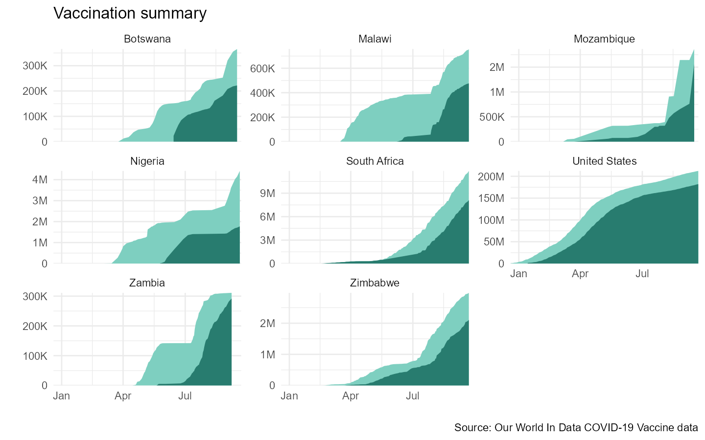

vignettes/How-to-fetch-COVID-vaccine-data.Rmd
How-to-fetch-COVID-vaccine-data.Rmd#> Warning: package 'magrittr' was built under R version 4.1.1
#>
#> Attaching package: 'dplyr'
#> The following objects are masked from 'package:stats':
#>
#> filter, lag
#> The following objects are masked from 'package:base':
#>
#> intersect, setdiff, setequal, union
#> Warning: package 'scales' was built under R version 4.1.1This vignette provides best practices for fetching COVID-19 vaccine data from Our World in Data Github repo.
We have updated COVIDutilities package with functionality to download vaccine data. Two new functions drive the process.
# The function below fetches a list of countries for which vaccine data is available
get_vax_countries() %>% head(15)
#> [1] "Angola" "Myanmar" "Cambodia" "China"
#> [5] "India" "Indonesia" "Kazakhstan" "Kyrgyzstan"
#> [9] "Laos" "Nepal" "Papua New Guinea" "Philippines"
#> [13] "Tajikistan" "Thailand" "Turkmenistan"
# Save the list of countries with data to an object name df_cntry
cntry_list <- get_vax_countries()
cat(paste("\n", "Number of countries with vaccine data available: ", length(cntry_list)))
#>
#> Number of countries with vaccine data available: 71With a valid list of countries, we can turn our attention to extracting a data frame with the actual vaccine data. To accomplish this we will make use of the get_vax_data() function. The function requires a character object
# Fetch all vaccine data (takes a bit to run)
df_vax <- get_vax_data(cntry_list)
#> Warning: 'get_vax_data' is deprecated.
#> Use 'pull_vax_data' instead.
#> See help("Deprecated")
glimpse(df_vax)
#> Rows: 6,347
#> Columns: 8
#> $ countryname <chr> "Angola", "Angola", "Angola", "Angola", "Angol~
#> $ date <date> 2021-03-01, 2021-03-08, 2021-03-18, 2021-03-2~
#> $ vaccine <chr> "Oxford/AstraZeneca", "Oxford/AstraZeneca", "O~
#> $ source_url <chr> "https://www.angop.ao/en/noticias/saude/covid-~
#> $ total_vaccinations <dbl> 0, 6169, 49000, 87022, 130750, 181578, 245442,~
#> $ people_vaccinated <dbl> 0, 6169, 49000, 87022, 130750, 181578, 245442,~
#> $ people_fully_vaccinated <dbl> NA, NA, NA, NA, NA, NA, NA, NA, NA, 40195, 752~
#> $ total_boosters <dbl> NA, NA, NA, NA, NA, NA, NA, NA, NA, NA, NA, NA~In some circumstances you may not need every country available. To extract a number of PEPFAR countries you can pass an object list of the country name.
df_vax_pepfar <- get_vax_data(paste(c("Zambia", "Nigeria", "South Africa", "Malawi", "Mozambique", "Zimbabwe", "Botswana", "United States"), "csv", sep = "."))
#> Warning: 'get_vax_data' is deprecated.
#> Use 'pull_vax_data' instead.
#> See help("Deprecated")
glimpse(df_vax_pepfar)
#> Rows: 947
#> Columns: 8
#> $ countryname <chr> "Zambia", "Zambia", "Zambia", "Zambia", "Zambi~
#> $ date <date> 2021-04-14, 2021-04-15, 2021-04-18, 2021-04-1~
#> $ vaccine <chr> "Oxford/AstraZeneca", "Oxford/AstraZeneca", "O~
#> $ source_url <chr> "http://www.china.org.cn/world/Off_the_Wire/20~
#> $ total_vaccinations <dbl> 0, 106, 1316, 2114, 3391, 9006, 12543, 14012, ~
#> $ people_vaccinated <dbl> 0, 106, 1316, 2114, 3391, 9006, 12543, 14012, ~
#> $ people_fully_vaccinated <dbl> 0, 0, 0, 0, 0, 0, 0, 0, 0, 0, 0, 0, 0, 0, 0, 0~
#> $ total_boosters <dbl> NA, NA, NA, NA, NA, NA, NA, NA, NA, NA, NA, NA~We can plot the data it to get a sense of what is going on in each country.
df_vax_pepfar %>%
ggplot(aes(x = date)) +
geom_area(aes(y = people_vaccinated), fill = "#7ecfc0") +
geom_area(aes(y = people_fully_vaccinated), fill = "#287c6f") +
scale_y_continuous(labels = label_number_si()) +
facet_wrap(~countryname, scales = "free_y") +
coord_cartesian(expand = F) +
labs(x = "", y ="", title = "Vaccination summary",
caption = "Source: Our World In Data COVID-19 Vaccine data") +
theme_minimal() +
theme(panel.spacing = unit(0.5, "lines"))